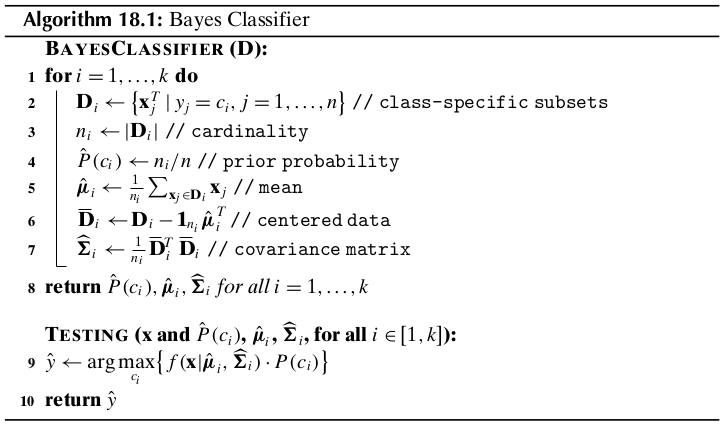
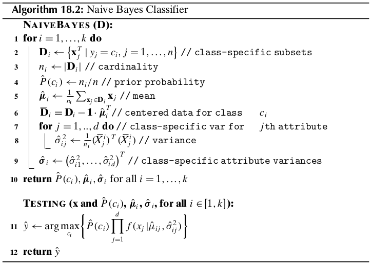

Chapter 18 Probabilistic Classification¶
18.1 Bayes Classifier¶
Let the training dataset \(\D\) consist of \(n\) points \(\x_i\) in a \(d\)-dimensional space, and let \(y_i\) denote the class for each point, with \(y_i\in\{c_1,c_2,\cds,c_k\}\). The Bayes classifier directly uses the Bayes theorem to predict the class for a new test instance, \(\x\). It estimates the posterior probability \(P(c_i|\x)\) for each class \(c_i\), and chooses the class that has the largest probability. The predicted class for \(\x\) is given as
The Bayes theorem allows us to invert the posterior probability in terms of the likelihood and prior probability, as follows:
Note
\(\dp P(c_i|\x)=\frac{P(\x|c_i)\cd P(c_i)}{P(\x)}\)
where \(P(\x|c_i)\) is the likelihood, defined as the probability of observing \(\x\) assuming that the true class is \(c_i\), \(P(c_i)\) is the prior probability of class \(c_i\), and \(P(\x)\) is the probability of observing \(\x\) from any of the \(k\) classes, given as
Because \(P(\x)\) is fixed for a given point, Bayes rule can be rewritten as
Note
\(\dp =\arg\max_{c_i}\{P(\x|c_i)P(c_i)\}\)
In other words, the predicted class essentially depends on the likelihood of that class taking its prior probability into account.
18.1.1 Estimating the Prior Probability¶
Let \(\D_i\) denote the subset of points in \(\D\) that are labeled with class \(c_i\):
Let the size of the dataset \(\D\) be given as \(|\D|=n\), and let the size of each class-specific subset \(\D_i\) be given as \(|D_i|=n_i\). The prior probability for class \(c_i\) can be estimated as follows:
Note
\(\dp\hat{P}(c_i)=\frac{n_i}{n}\)
18.1.2 Estimating the Likelihood¶
To estimate the likelihood \(P(\x|c_i)\), we have to estimate the joint probability of \(\x\) across all the \(d\) dimensions, that is, we have to estimate \(P(\x=(x_1,x_2,\cds,x_d)|c_i)\).
Numeric Attributes
In the parametric approach we typically assume that each class \(c_i\) is normally distributed around some mean \(\mmu_i\) with a corresponding covariance matrix \(\Sg_i\), both of which are estimated from \(\D_i\). For class \(c_i\), the probability density at \(\x\) is thus given as
Note
\(\dp f_i(\x)=f(\x|\mmu_i,\Sg_i)=\frac{1}{(\sqrt{2\pi})^d\sqrt{|\Sg_i|}}\) \(\dp\exp\bigg\{-\frac{(\x-\mmu_i)^T\Sg_i\im(\x-\mmu_i)}{2}\bigg\}\)
We can compute the likelihood by considiering a small interval \(\epsilon>0\) centered at \(\x\):
The posterior probability is then given as
Note
\(\dp P(c_i|\x)=\frac{2\epsilon\cd f_i(\x)P(c_i)}{\Sg_{j=1}^k2\epsilon\cd f_j(\x)P(c_j)}\) \(\dp=\frac{f_i(\x)P(c_i)}{\Sg_{j=1}^kf_j(\x)P(c_j)}\)
Because \(\Sg_{j=1}^kf_j(\x)P(c_j)\) remain fixed for \(\x\), we can predict the class for \(\x\) by
The sample mean for the class \(c_i\) can be estimated as
and the sample covariance matrix for each class can be estimated as
where \(\bar{\D_i}\) is the centered data matrix for class \(c_i\) given as \(\bar{\D_i}=\D_i-\1\cd\hat{\mmu_i}^T\). These values can be used to estimate the probability density as \(\hat{f_i}(\x)=f(\x|\hat{\mmu_i},\hat{\Sg_i})\).
The cost of training is dominated by the covariance matrix computation step which takes \(O(nd^2)\) time.
Categorical Attributes
Let \(X_j\) be a categorical attribute over the domain \(dom(X_j)=\{a_{j1},a_{j2},\cds,a_{jm_j}\}\). Each categorical attributes \(X_j\) is modeled as an \(m_j\)-dimensional multivariate Bernoulli random variable \(\X_j\) that takes on \(m_j\) distinct vector values \(\e_{j1},\e_{j2},\cds,\e_{jm_j}\), where \(\e_{jr}\) is the \(r\)th standard basis vector in \(\R^{m_j}\) and corresponds to the \(r\)th value or symbol \(a_{jr}\in dom(X_j)\). The entire \(d\)-dimensional dataset is modeled as the vector random variable \(\X=(\X_1,\X_2,\cds,\X_d)^T\). Let \(d\pr=\sum_{j=1}^dm_j\); a categorical point \(\x=(x_1,x_2,\cds,x_d)^T\) is therefore represented as the \(d\pr\)-dimensional binary vector
where \(\v_j=\e_{jr_j}\) provided \(x_j=a_{jr_j}\) is the \(r_j\)th value in the domain of \(X_j\). The probability of the categorical point \(\x\) is obtained from the joint probability mass function (PMF) for the vector random variable \(\X\):
Note
\(P(\x|c_i)=f(\v|c_i)=f(\X_1=\e_1{r_1},\cds,\X_d=\e_{dr_d}|c_i)\)
The above joint PMF can be estimated directly from the data \(\D_i\) for each class \(c_i\) as follows:
where \(n_i(\v)\) is the number of times the value \(\v\) occurs in class \(c_i\). Unfortuantely, if the probability mass at the point \(\v\) is zero for one or both classes, it would lead to a zero value for the posterior probability. One simple solution is to assume a pseudo-count 1 for each value, that is, to assume that each value of \(\X\) occurs at least one time, and to augment this base count of 1 with the actual number of occurrences of the observed value \(\v\) in class \(c_i\). The adjusted probability mass at \(\v\) is then given as
Note
\(\dp\hat{f}(\v|c_i)=\frac{n_i(\v)+1}{n_i+\prod_{j=1}^dm_j}\)
Challenges
The main problem with the Bayes classifier is the lack of enough data to reliably estimate the joint probability density or mass function, especially for high-dimensional data.
18.2 Naive Bayes Classifier¶
The naive Bayes approach makes the simple assumption that all the attributes are independent.
Note
\(\dp P(\x|c_i)=P(x_1,x_2,\cds,x_d|c_i)=\prod_{j=1}^dP(x_j|c_i)\)
Numeric Attributes
For numeric attributes we make the default assumption that each of them is normally distributed for each class \(c_i\). Let \(\mu_{ij}\) and \(\sg_{ij}^2\) denote the mean and variance for attribute \(X_j\), for class \(c_i\). The likelihood for class \(c_i\), for dimension \(X_j\), is given as
Incidentallly, the naive assumption corresponds to setting all the covariances to zero in \(\Sg_i\), that is,
This yields
The naive Bayes classifier uses the sample mean \(\hat{\mmu_i}=(\hat{\mu_{i1}},\cds,\hat{\mu_{id}})^T\) and a diagonal sample covariance matrix \(\hat{\Sg_i}=diag(\sg_{i1}^2,\cds,\sg_{id}^2)\) for each class \(c_i\). Thus, in total \(2d\) parameters have to be estimated, corresponding to the sample mean and sample variance for each dimension \(X_j\).
Training the naive Bayes classifier is very fast, with \(O(nd)\) computational complexity.
Categorical Attributes
Note
\(\dp P(\x|c_i)=\prod_{j=1}^dP(x_j|c_i)=\prod_{j=1}^df(\X_j=\e_{jr_j}|c_i)\)
where \(f(\X_j=\e_{jr_j}|c_i)\) is the probability mass function for \(\X_j\), which can be estimated from \(\D_i\) as follows:
where \(n_i(\v_j)\) is the observed frequency of the value \(\v_j=\e_{jr_j}\) corresponding to the \(r_j\)th categorical value \(a_{jr_j}\) for the attribute \(X_j\) for class \(c_i\). The adjusted estimates with pseudo-counts are given as
Note
\(\dp\hat{f}(\v_j|c_i)=\frac{n_i(\v_j)+1}{n_i+m_j}\)
where \(m_j=|dom(X_j)|\).
18.3 \(K\) Nearest Neighbors Classifier¶
We illustrate the non-parameteric approach using nearest neighbors density estimation from Section 15.2.3, which leads to the K nearest neighbors (KNN) classifier.
Let \(\D\) be a training dataset comprising \(n\) points \(\x_i\in\R^d\), and let \(\D_i\) denote the subset of points in \(\D\) that are labeled with class \(c_i\), with \(n_i=|\D_i|\). Given a test point \(\x\in\R^d\), and \(K\), the number of neighbors to consider, let \(r\) denote the distance from \(\x\) to its \(K\)th nearest neighbor in \(\D\).
Consider the \(d\)-dimensional hyperball of radius \(r\) around the test point \(\x\), defined as
We assume that \(|B_d(\x,r)|=K\).
Let \(K_i\) denote the number of points among the \(K\) nearest neighbors of \(\x\) that are labeled with class \(c_i\), that is
The class conditional probability density at \(\x\) can be estimated as the fraction of points from class \(c_i\) that lie within the hyperball divided by its volume, that is
Note
\(\dp\hat{f}(\x|c_i)=\frac{K_i/n_i}{V}=\frac{K_i}{n_iV}\)
where \(V=vol(B_d(\x,r))\) is the volume of the \(d\)-dimensional hyperball.
Note
\(\dp\hat{y}=\arg\max_{c_i}\{P(c_i|\x)\}=\arg\max_{c_i}\bigg\{\frac{K_i}{K}\bigg\}=\arg\max_{c_i}\{K_i\}\)
Beceause \(K\) is fixed, the KNN classifier predicts the class of \(\x\) as the majority class among its \(K\) nearest neighbors.